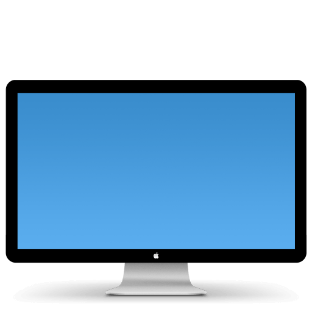

Firmwares and Drivers

SHA256: 94317935ddf70d373712b4ae94a7bedc982fb81ad4666d84edeadb3e9eece6a0
SHA256: 66b48fbf03d9e0628a6838a465f5a63421de5eb05906e5e2d7558d7cc7875ec5
Updates for the LED Cinema Display 27" firmware. Second link comes with firmware tool to check if update is installed/seems to be the more updated one. Fixes intermittent audio issue.
Archived article: https://support.apple.com/en-us/HT203417
SHA256: fa89ba7467b426e683b3ddd8702eabd0b0cafe0e668a796c72f5bbc6f2ccd423
SHA256: 9c82d4cbd088007331f9cc70ad96bfa8d50305040d8e8857bf43aebb07679140
Allows you to use your LED Cinema display's iSight on Windows(working on Windows 11 as of 3/26/2023). Null driver shouldn't be needed but including it anyway, Brigadier is your friend for other drivers needed. Brightness can be controlled by Brightness Controller 1.5.7 Beta, made possible by HolstSchumacher.
Disclaimer: This software is here for archival reasons, I take no credit for anything.